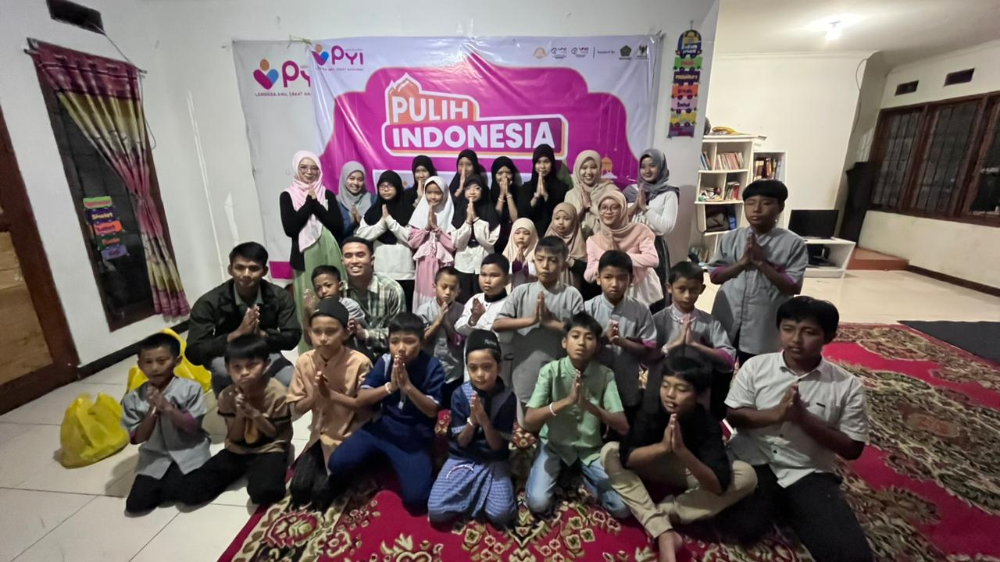
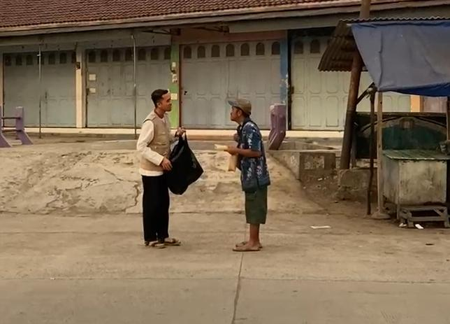
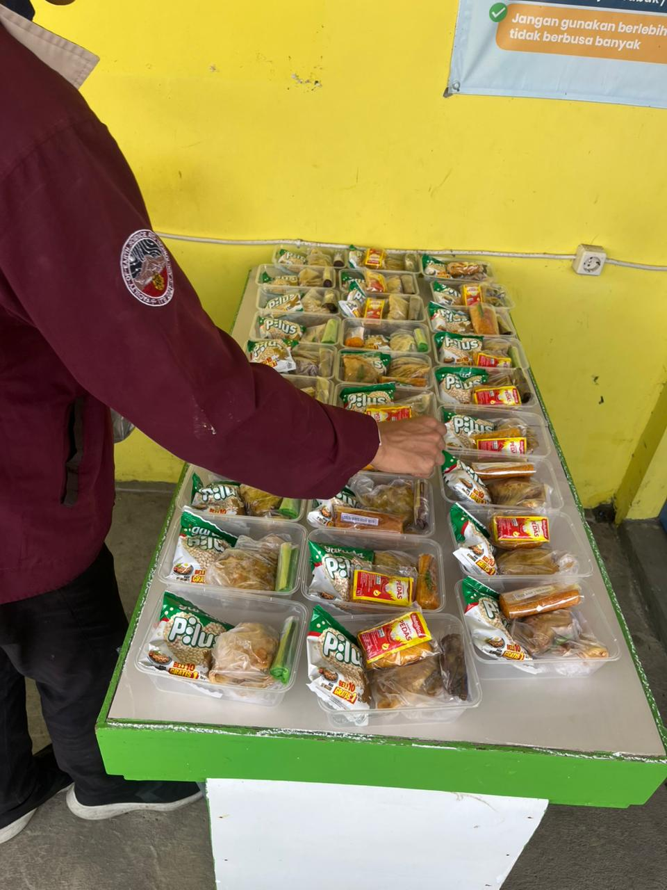
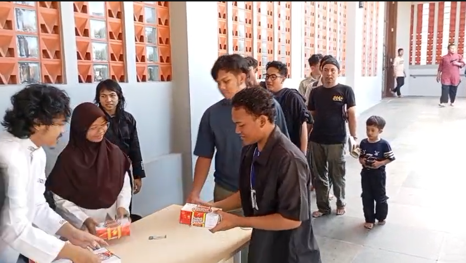
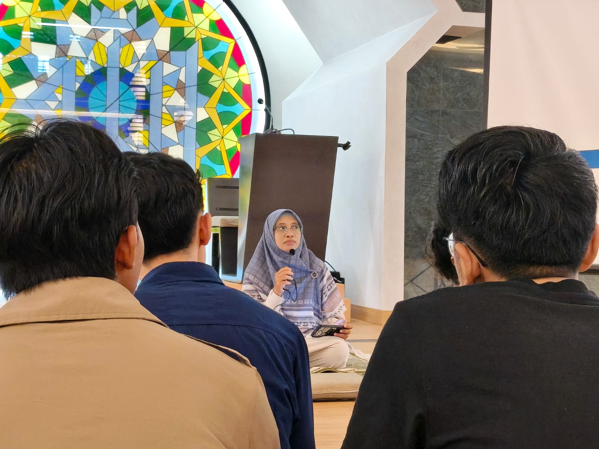
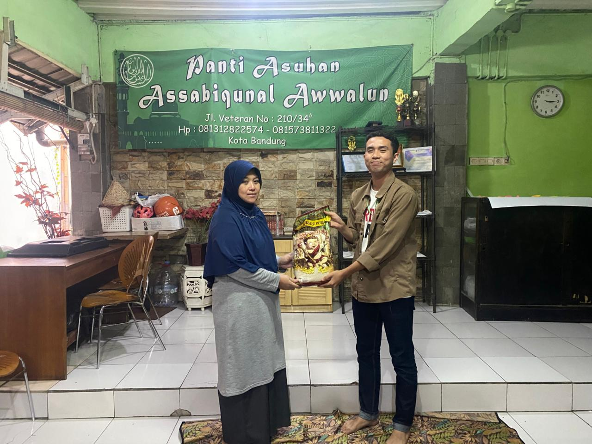
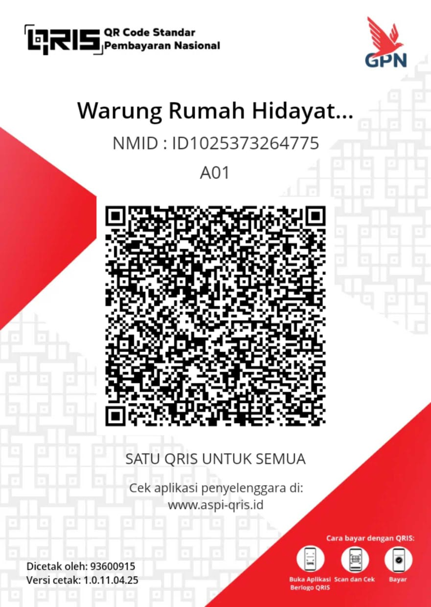

Komunitas sosial kemasyarakatan. Mengumpulkan sedekah subuh harian untuk diwujudkan menjadi senyum bagi mereka yang membutuhkan.
— HR. Bukhari & Muslim
Mengamalkan anjuran sedekah subuh. Setiap pagi akan ada broadcast pengingat (reminder) di grup WhatsApp komunitas.
Donasi yang terkumpul dari para anggota akan disatukan. Berapapun nominalnya, jika bersama-sama akan menjadi besar.
Dana disalurkan langsung ke lapangan dalam bentuk kegiatan sosial, pembagian makanan, hingga santunan panti asuhan.
Beberapa aktivitas sosial yang rutin kami selenggarakan dari hasil donasi bersama.

Bermain bersama, berbagi cerita, dan memberikan santunan serta kebutuhan pokok untuk anak-anak panti.
Lihat Foto Lainnya

Membagikan paket sarapan untuk pekerja jalanan, pemulung, dan mereka yang membutuhkan di jalan.
Lihat Foto Lainnya

Kegiatan spesial di bulan Ramadan. Membagikan ratusan paket takjil gratis menjelang waktu berbuka puasa dan makanan sahur.
Lihat Foto Lainnya

Membagikan makanan atau kebutuhan pokok setiap hari Jumat untuk menebar keberkahan dan berbagi kebahagiaan dengan sesama.
Lihat Foto Lainnya

Rangkaian kegiatan semarak bulan suci, mulai dari kajian, buka puasa bersama, dan bazzar takjil.
Lihat Foto Lainnya

Penyaluran paket sembako berisi kebutuhan pokok sehari-hari kepada keluarga pra-sejahtera, panti asuhan dan masyarakat yang membutuhkan.
Lihat Foto Lainnya
Scan QRIS di bawah ini menggunakan aplikasi M-Banking atau e-Wallet favoritmu.

BRI
705001014220537
a.n. Syafrizal Hidayat
Semoga sedekah subuh Anda diganti dengan pahala dan rezeki yang berlipat ganda. Aamiin.
Kepercayaan donatur adalah amanah terbesar kami. Berikut adalah update ringkasan kas komunitas.
Total Pemasukan
Total Pengeluaran Kegiatan
Saldo Kas Saat Ini
| Tanggal | Keterangan | Pemasukan | Pengeluaran |
|---|---|---|---|
| Sedang memuat data dari Google Spreadsheet... | |||
Tonton dokumentasi lengkap kegiatan kita langsung dari Instagram!
Tidak ada minimal! Berapapun niatnya, yang paling penting adalah istiqomah (konsisten). Uang Rp 1.000 atau Rp 2.000 pun akan sangat berdampak besar jika dikumpulkan secara kolektif bersama anggota lainnya.
Sangat dianjurkan disisihkan setiap subuh untuk mendapat keutamaan doa malaikat. Namun untuk transfernya, kamu bisa menyetorkannya sekaligus secara mingguan atau bulanan agar memudahkan, karena banyak yang terkendala karena jarang membuka hp di waktu subuh. Yang terpenting adalah niatnya.
Silakan bergabung ke Grup WhatsApp kami! Setiap akan ada kegiatan sosial, pengurus akan memberikan informasi dan membuka pendaftaran relawan bagi siapa saja yang ingin ikut membantu.